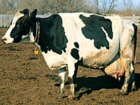

The Ayrshire
The Ayrshire breed was developed in the country of Ayr, in southwestern Scotland. It was created in an effort to improve the native cattle through crossing with Dutch or Teeswater West Highland Channel Island Cattle.
The Ayrshire was introduced to Canada by Lord Dalhousie in 1821. They were also imported in 1827 and 1845. An Ayrshire breeders association was organized in 1870, its purpose being to keep accurate breed records and registrations, as well as to establish and maintain breed standards while improving the product efficiency of the Ayrshire breed.
Ayrshire milk is of a very high quality, with a high solids content. This means it is excellent for production of dairy products (cheese, yogurt, etc) or for fluid milk consumption if it is blended with lower quality milk to provide a product acceptable to consumers.
The average milk production by the Ayrshire breed has improved by more than 50% in the last 30 years
Canadian Guernsey
Guernsey cattle were developed on the second largest isle in the English Channel; Guernsey. It is thought that the Guernsey breed was developed through combining the Brittany and Normandy breeds. The Guernsey was first imported into Canada in 1878 by Sir John Abbot of Montreal. The Canadian Guernsey breeders association was developed in 1905.
Guernseys are a fawn shade, with clearly defined white markings (Unlike the Jersey, whose fawn colour blends into white). Mature bulls can weigh from 590 to 910 Kg, while cows usually range from 400 to 570 Kg. Guernsey milk has a rich, golden colour, due to it's high carotene content. The milk also has a higher percentage of protein, lactose, and minerals than average milk. An average Guernsey cow will produce 5630 kilograms of milk with a butterfat percentage of 4.9.

Holstein-Friesian
Holstein cattle first arrived in Canada in 1881, thanks to Archibald Wright who bought the first purebreds to Old Fort Gary in Manitoba. The latest importation into the Canadian gene pool was in 1905. Holsteins originated from very old cattle stocks in the province of Friesland in the Netherlands.
Holsteins have distinctive black and white markings. Mature bulls can weigh between 680 - 1900 Kg. Cows weight may vary from 500 - 680 Kg. A mature cow will produce approximately 6842 Kg. of milk in a year, with 3.76 % butterfat on a twice daily milking regime.
Due to selection by breeders, the Canadian Holsteins are now noted for the shape, quality, and attachment of their udders. Holsteins hold all of the current Canadian milk production records. Due to their exceptional milk producing ability, 88% of all production animals certified in Canada are Holsteins. Canadian foundation and breeding stock are sold worldwide to over 70 countries.
Jersey
The Jersey cow originated on the largest of the English Channel Islands, the Isle of Jersey. The breed has developed in Canada with imports from both Jersey and England. R. H. Stephens brought the Jersey to Canada in 1868. These original animals formed the foundation of the famous St. Lambert herd. Some of the more recent additions to Canadian stock have come from the United States.
On the basis of individual size and weight, the Jersey is one of the most efficient converters of
feed into food. Her annual production may reach between 9 and 20 times her body weight. Jersey milk contains the
highest fat content (5.2%).
Jersey cattle are a shade of fawn, or dun. This colouring protects them from heat and direct sunlight, allowing milk production and butterfat content to remain at a high level. Although they look quite delicate, the Jersey breed is very hardy, withstanding harsh Canadian winters very well.
|